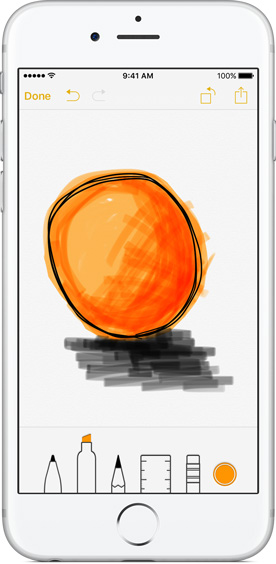
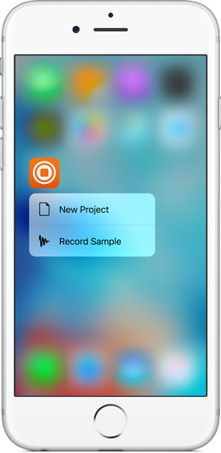
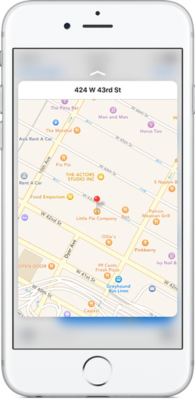

Netcom Developer's Backing #6のまとめ
9/18（金）にNetcom Developer’s Backing #6を行いました。
iOS9の新機能について
Search APIsについて
以下の3つの要素で構成されている。
- NSUserActivity
- CoreSpotlight
- Web Markup
iOS側での対応
NSUserActivity（ユーザ端末内/他の端末にも）
- ユーザーがアプリ内で閲覧したコンテンツ（のみ）をindexして、SpotlightやSafariの検索バーから検索することができるようにする機能
デバイス内だけでなく、アプリをインストールしていないユーザーのSpotlightやSafariの検索バーにも、コンテンツを表示することができる
実装
// NSUserActivity var activity:NSUserActivity = NSUserActivity(activityType: “com.yummly.browseRecipe“) activity.title = "Baked Potato Chips" activity.keywords = Set<String>(arrayLiteral: "dog", "cat", "pig", "sheep") activity.userInfo = ["id": "http://www.yummly.com/recipe/BPC-983195"] activity.eligibleForSearch = true activity.becomeCurrent()Spotlightでタップ
appDelegateでapplication:continueUserActivity:restorationHandler:メソッドが呼ばれる
-> このとき、何をするか、 -> WWDC2015のスライドには // Restore state for userActivity and userInfo とある。（まだよくわかってない）Cloud Indexへの登録 eligibleForPublicIndexingをYESにする
-> キーワードに対して人気が高いアプリと認識されると、アプリをインストールしていないユーザにも検索結果を表示できる
CoreSpotlight（ユーザ端末内のみ）
- Spotlightに表示させるコンテンツを追加、更新する機能
- ユーザーの閲覧したコンテンツだけでなく、アプリ内の任意のコンテンツを検索させることができる
NSUserActivityとの違いがよく分からない
-> WWDCのスライドでは CSSearchableIndexを add, update, and deleteできる Used by Messages, Mail, Calendar, and Notes
ということだが、、、 -> もう少し調べてみる https://www.hackingwithswift.com/read/32/4/how-to-add-core-spotlight-to-index-your-app-content
実装
// Core Spotlight
let attributeSet = CSSearchableItemAttributeSet(itemContentType: kUTTypeImage as String)
attributeSet.title = "iOS-9-Sampler_CoreSpotlight"
attributeSet.contentDescription = "iOS-9-Sampler is a code example collection for new features of iOS 9."
attributeSet.keywords = ["dog", "cat", "bird", "fish"]
let image = UIImage(named: "m7")!
let data = UIImagePNGRepresentation(image)
attributeSet.thumbnailData = data
let searchableItem = CSSearchableItem(
uniqueIdentifier: uniqueIdentifier,
domainIdentifier: domainIdentifier,
attributeSet: attributeSet)
CSSearchableIndex.defaultSearchableIndex().indexSearchableItems([searchableItem]) { (error) -> Void in
if error != nil {
print("failed with error:\(error)\n")
}
else {
print("Indexed!\n")
}
}
Webページ側での対応
Web Markup
- Universal Linkやメタ情報をAppleのクロールがインデックスできる仕様で記載する
- Smart App Banners
Open Graph または schema.org で定義されているフォーマットで詳細情報を追加する
チェックツール https://search.developer.apple.com/appsearch-validation-tool/
具体的な実装はこちらの記事を参考にすると良さそうです。あと、iOS-9-Sampler。
http://nsblogger.hatenablog.com/entry/2015/06/18/ios9_core_spotlight http://ameblo.jp/ca-1pixel/entry-12047222782.html
他に気になるのは
Multitasking Enhancements for iPad
-> まだ調べてない
3D Touch
-> これは先日のPotatotips#21で発表してた人がいた（まだシュミレーターで試せないそう、、、）
Watch Connectivity
-> これは、今サンプルアプリを作成中（証券会社のお気に入り銘柄を表示するアプリ）
恒例のiOS-9-Sampler
https://github.com/shu223/iOS-9-Sampler * Text Detector * UIStackView
potatotipsa #21のまとめ
大島さんのブログ
http://tech.recruit-mp.co.jp/event/potatotips-21/
気になった発表
3D Touch on iPhone (iOS)
シュミレーターで3Dタッチ機能が動かなかったので動作確認はできてない
Whta is 3D touch?
- iOS9で導入された感圧機能を使った新しい機能
- 対応端末はiPhone6S/iPhone6S,plus
- 一部の機能は9.1からだが、ほとんどは9.0で実装できる
- Pressure Sensitivity・Quick Actions・Peek and Popという3つのインタラクションが追加された

Pressure Sensitivity
- タッチの圧力を判定
- UITouchクラスに追加されているforce(CGFLoat)プロパティを判定する
- iOS9.1からはUITouchクラスにスタイラスの角度取得のプロパティも追加される予定
Quick Actions
- ホームアプリアイコンの押下時にメニューが表示できる
- static quick action
- info.plistで実装
- 表示できる数には限りがある
- dynamic quick action
- コードで実装
- アクションがタップされた時はAppDelegateのデリゲートメソッドで取得できる
Peek and pop
- 次の画面を出す前にチラ見（Peek）できる
- インタラクションの流れ
- 特定のエリアを軽く押す(Peek)
- Peek画面が表示される（押すのをやめると元の画面に戻る）
- さらに強く押す(Pop)とPeek画面が大きくなり、目的のview画面 となる
- 実装
- peekのviewを指定して、UIViewControllerPreviewingDelegateを設定する
- peekアクション時、popアクション時の各デリゲートメソッドで表示サイズの処理などを行う
- UIWebViewやMKWebViewでは、すでに実装されている。allowsLinkPreviewをtrueにすると使えるようになります。（デフォルトはfalse）
ショボいPull Requestを積み重ねて、自分の中でOSS活動の敷居を下げる (iOS)
バグのことは嫌いになってもXcodeのことは嫌いにならないでください。 (iOS)
- XcodeでのデバッグについてのTips
Xcodeでデバッグ時のTips
- いつもクラッシュしたときにAppDelegateで止まる -> 全ての例外発生時を対象ににブレイクポイントを設定し、ブレイクポイント発生時にActionを指定する(po $arg1) -> ええ感じのところで止まり、ええ感じの出力
- AutoLayout制約でのエラー -> シンボリックブレイクポイントを設定する -> 制約矛盾が発生した段階でブレイクし、viewの階層表示ができて分かりやすい
Create Layouts with the Wearable UI Library (Android)
- Android WearはUIコントロールたくさんあるんだなー（Apple Watchは超少ないのでうらやましい） #potatotips -> 同感です。
（遅れて見れなかった）
Swift compile time is so slow (iOS)
-> Swiftのコンパイルが遅いのでソースファイルを一つにまとめてビルドしてみたらコンパイル時間が大幅に短縮された話
Apple Watch Tips (iOS)
-> 画像のローディング時の工夫について
次回は2週間後の 10/2（金）に開催予定です。
（高井）